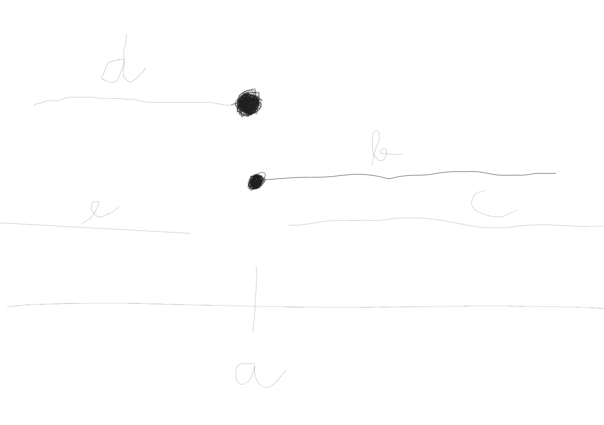
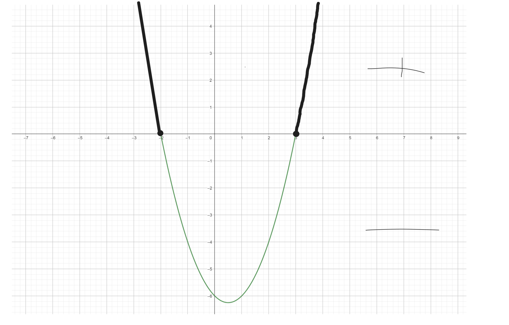

(3b) Binární operace \(*\) je definovaná jako \(a*b=\frac{a+b}{a-b}\). Určete hodnotu neznámé \(x\) tak, aby \((2*x)*3=-2\)
\[x \neq 2 \land x \neq 1\] \[\frac{\frac{2+x}{2-x}+3}{\frac{2+x}{2-x}-3}=-2\] \[\frac{2+x}{2-x}+3=-2*(\frac{2+x}{2-x}-3)\] \[\frac{2+x}{2-x}+3=\frac{-4-2x}{2-x}+6\] \[2+x+3*(2-x)=-4-2x+6*(2-x)\] \[2+x+6-3x=-4-2x+12-6x\] \[8-2x=8-8x\] \[0=-6x\] \[x=0\]
(3b) Mezi čísly a, b, c, d, e platí následující vztahy. Číslo a není větší než b, a < c, d není větší než b a e\(\lt\) a. Který z následujících výroků nemůže býr pravidvý?
\[a\le b\] \[a\lt c\] \[d\leq b\] \[e\lt a\]
(3b) Mějme dvě čísla zapsaná v pětkové soustavě: \(4112_5\) a \(2443_5\). Vyjádřete jejich rozdíl také v pětkové soustavě.
\[ \begin{array}{ccccc} \ & 4 & 1 & 1 & 2_5 \\ \ - & 2 & 4 & 4 & 3_5\\ \hline\\ & 1 & 1 & 1 & 4_5\\ \end{array} \]
(7b) Původní cena knihy byla 350 Kč. Pak byla zdražena o 20 %. Jelikož nešla na odbyt, byla zlevněna o 15 % (z ceny po zdražení) a to je její současná cena. Rozhodněte, které tvrzení je pravdivé.
\[350* 1,2 = 420\] \[350* 0,85 = 357\] \[357/350 = 1,02\]
(7b) Které z následujících tvrzení o definičním oboru funkce \(f(x) = \sqrt{\frac{1}{x+2}}+\sqrt{\frac{1}{x^2-x-\frac{3}{4}}}\)
I. \[x+2 \neq 0\] \[x \neq -2\] \[x \gt -2\]
II. \[x^2-x-\frac{3}{4}=0\] \[4x^2-4x-3=0\] \[D=16-4*4*(-3)=16+48=64\] \[x_1=\frac{4+8}{8}=\frac{12}{8}=1,5\] \[x_2=\frac{4-8}{8}=\frac{-4}{8}=-0,5\]

Průnik je: \[x \in \langle -2,-\frac{1}{2} \rangle \cup \langle \frac{3}{2} , \infty)\]
(7b) Ve třídě je 30 žáků. Jedna třetina z nich si k maturitě zvolila matematiku a fyziku zároveň. Alespoň jeden z těchto předmětů si zvolilo 24 žáků. Maturovat z angličtiny se rozhodlo 22 žáků. Všechny tři předměty si vybralo 8 žáků a jen matematiku 3 žáci. Matematiku a zároveň angličtinu si vybralo 15 žáků. Dva žáci si nevybrali ani jeden z těchto tří předmětů. Rozhodněte, které tvrzení je pravdivé.
(7b) Rozhodněte, které tvrzení o řešeních rovnice \(\frac{\log_{3}(6x-2)}{\log_{3}(x-3)}=2\) je pravdivé.
\[6x-2>0 \Rightarrow x>\frac{1}{3}\] \[x-3>0 \Rightarrow x>3\]
\[\log_{3}(6x-2)=\log_{3}(x-3)^2\] \[6x-2=(x-3)^2\] \[6x-2=x^2-6x+9\] \[0=x^2-12x+11\] \[D=144-4*11=100\] \[x_1=\frac{12+10}{2}=\frac{22}{2}=11 ✔\] \[x_1=\frac{12-10}{2}=\frac{2}{2}=1 ×\]
(7b) Nekonečná spirála se skládá z půlkružnic. Poloměr první půlkružnice je 6 cm a poloměr každé další půlkružnice je o 25 % menší než poloměr půlkružnice předcházející. Vypočítejte délku \(l\) spirály.
\[a_1=6\] \[q=0,75\] \[a_2=6*0,75=4,5\]
Vzorec na součet nekonečné geometrické řady: Řada je konvergentní. \[ \vert q\vert < 1\] \[s_n=\frac{a_1}{1-q}\]
\[s_n=\frac{6}{1-0,75}\] \[s_n=\frac{6}{0,25}\] \[s_n=24𝝅 cm\]
(7b) Jestliže \(y=2x^2+2x-12\), pak \(y \in \langle 0, 12 \rangle \) právě pro
\[D = 4-4*(-12)*2 = 4 + 96 = 100\] \[x_1 = \frac{-2-10}{4}=\frac{-12}{4}=-3\] \[x_2 = \frac{-2+10}{4}=\frac{8}{4}=2\]
Rozklad kvadratického trojčlenu na součin: \[y=2*(x-2)*(x+3)\]

(7b) Pro řešení nerovnice \((\frac{1}{3})^{x^2} \leq 3^{-x-6}\)
\[3^{-x^2} \leq 3^{-x-6}\] \[-x^2 \leq -x-6\] \[0 \leq x^2-x-6\] \[D=1-4*(-6)=25\] \[x_1=\frac{1+5}{2}=3\] \[x_2=\frac{1-5}{2}=-2\]
(7b) Jsou dány dvě množiny \(A= \{ x|x^2+4x-2>0 \}\) a \(B = \{ x| \vert x+1 \vert \leq 3\}\). Rozdílem množin A mínus B je
Množina A: \[x^2+4x-2=0\] \[D=16-4*(-2)=24\] \[x_1=\frac{-4+2\sqrt{6}}{2}=-2+\sqrt{6}\] \[x_2=\frac{-4-2\sqrt{6}}{2}=-2-\sqrt{6}\]

Množina B:

Rozdíl možin \(A-B\)

(7b) Kolika různými způsoby lze ze 7 mužů a 3 žen vybrat trojici tak, aby v ní byla nejvýše jedna žena?
Nejvýše jedna žena \( \Rightarrow\) 1 a žádná
1: \[\binom{7}{2}=21\] \[21 * 3 = 63\]
0: \[\binom{7}{3}=35\]
\[63 + 35 = 98\]
(7b) Určete hodnotu parametru p tak, aby přímka q neměla s kružnicí k žádný společný bod. \( q: px+y-1=0\) a \(k:x^2-4x+y^2-6y-3=0\)
\[y=-px+1\] \[x^2-4x+y^2-6y-3=0\] \[\ldots\ldots\ldots\ldots\ldots\ldots\ldots\ldots\ldots\ldots\] \[x^2-4x+(-px+1)^2-6(-px+1)-3=0\] \[x^2-4x+p^2x^2-2px+1+6px-6-3=0\] \[x^2+p^2x^2-4x+4px-8=0\] \[x^2(p^2+1)+x(4p-4)-8=0\]
Pokud \(D<0\) tak kružnice s přímkou nebudou mít nikdy žádný společný bod. \[(4p-4)^2-4(1+p^2)*(-8)=16p^2-32p+16+32(1+p^2)=16p^2-32p+16+32+32p^2=48p^2-32p+48\] \[48p^2-32p+48<0\] \[3^2-2p+3<0\] \[D=4-4*3*3=4-36=-32\]
Neexistuje parametr.
(7b) Nalezněte řešení rovnice \(2x^5-x^3+2x^2=1\) a rozhodněte, které tvrzení je pravdivé.
\[2x^5-x^3+2x^2=1\] \[2x^5-x^3+2x^2-1=0\] \[x^3*(2x^2-1)+2x^3-1=0\] \[(x^3+1)*(2x^2-1)=0\]
1. \[x^3+1=0\] \[x^3=-1\] \[x=-1\]
2. \[2x^2=1\] \[x^2=\frac{1}{2}\] \[x=\pm\frac{\sqrt{1}}{\sqrt{2}}\] \[x=\pm\frac{1}{\sqrt{2}}\] \[x=\pm\frac{\sqrt{2}}{2}\]
(7b) Určete všechny hodnoty reálného parametru p, pro které má následující rovnice právě 2 různé reálné kořeny. \(px^2-p(p+3)+2p(p+1)=0\)
2 kořeny budeme mít pokud \[D=(-p^2-3p)^2-4p(2p^2+2p)=p^4+6p^3+9p^2-8p^3-8p^2=p^4-2p^3+p^2=(p^2-p)^2\]
\[x_1=\frac{p^2+3p+(p^2-p)}{2p}=\frac{2p^2+2p}{2p}=\frac{2p(2p+1)}{2p}=2p+1\] \[x_2=\frac{p^2+3p-(p^2-p)}{2p}=\frac{p^2+3p}{2p}=\frac{p^2+3p-p^2+p}{2p}=\frac{4p}{2p}=2\]
(7b) Jaká je pravděpodobnost, že při dvou hodech stejnou šestibokou kostkou bude součet obou hodů 9?
Můžeme si vypsat všechny možnosti hodu kostky a hledat kdy se součet 2 hodů rovná 9.
Druhá možnost je jít od 1-6 a snažit se hledat, aby nám čísla dávaly dohromady 9: \[1+6 = 7\] \[2+6=8\]
\[3+6=9\] a při změně pořádí mámé druhou
\[4+5=9\] a při změně pořádí mámé druhou možnost
a ty další čísla pro (5,6) už jsou ty čísla v opačném pořadí
Máme ted 4 možnosti
Máme 2 kostky o 6 stranách. 6 * 6 = 36
\[\frac{4}{36}=\frac{1}{9}\]